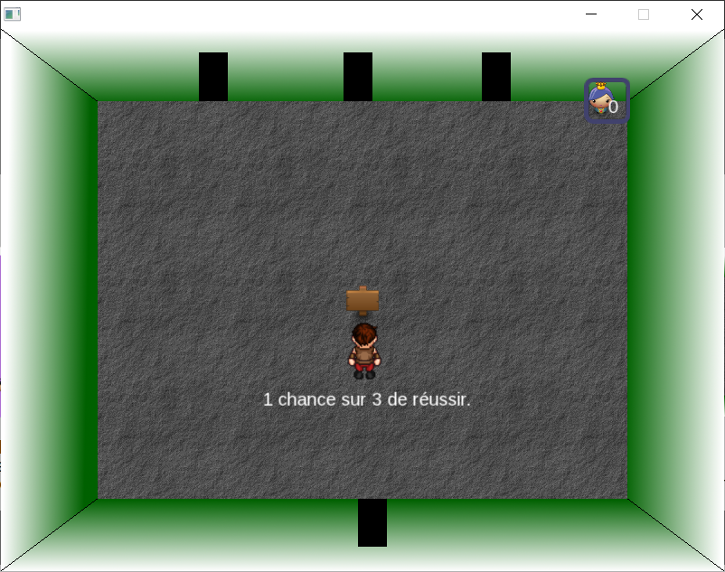
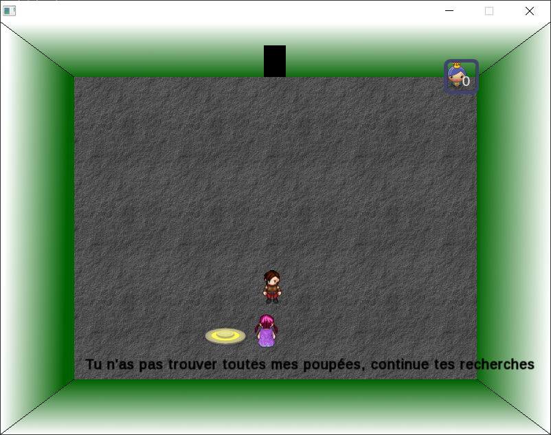
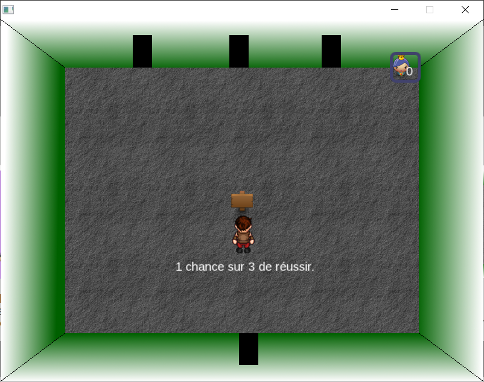
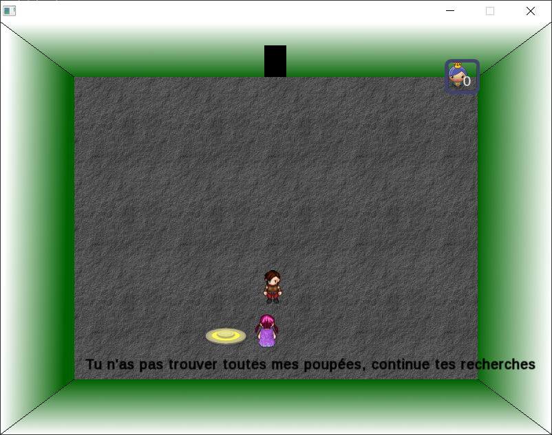
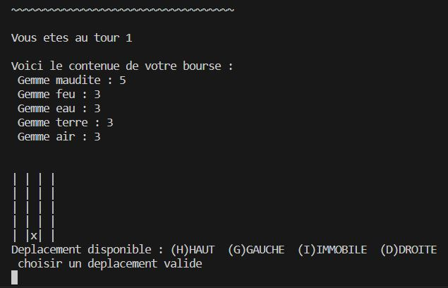
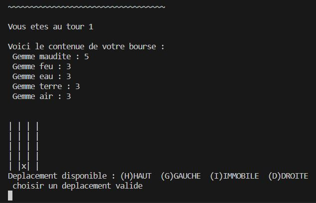

Bloggy Woggy
Le blog qui Woggy !
(Non ça ne veut rien dire)
Le blog qui Woggy !
(Non ça ne veut rien dire)
 



Le projet : Jeu d'enigme réalisé en periode de lycée. Une des première experience dans le domaine de la programmation avec un visuel. Il a été réalisé avec le logiciel Gdevelop qui est un logiciel pour créer des jeux simple sans connaître de langage de programmation. Soucis technique, le nombre de poupées ne se réinitialise pas si on ne ferme pas la fenêtre.
Résumé : Le personnage se déplace dans un sorte de chateau dans le but de retrouver les poupées de la petite fille à travers 4 salles d'énigmes.
Gameplay : Se déplacer avec les flèches directionnelles et intéragir avec espace
Téléchargement du fichier : Télécharger
 

Le projet : Projet réalisé pour une épreuve de fin de second semestre en licence. Le but était de créer un jeu textuel en java (Jouable sur terminale). Nous étions limité à ce que l'on a vus en cours.
Résumé : Dans un donjons, le joueur se déplace horizontalement et verticalement sur une carte. Chaque tour un monstre apparait et l'on doit piocher au moins autant de gemmes de l'élément désiré que le niveau de l'ennemi.
Gameplay : Entrer les caractères correspondants (pas très difficile à déduire)
Téléchargement du fichier : Télécharger
Notes : Pour éxécuter le jeu il faut avoir java d'installé et démarrer depuis le fichier LaQuete.java

Le projet : Site répertoriant les différents liens pour un projet de youtube sur le monde des anciens jeux-vidéos avec comme mascotte un chat. Avec l'inspiration du site linktr.ee, je me suis dis que faire soit même son propre site de lien était plus amusant.
Le projet : Un jeu inspiré de la quête du donjon fait précédement en java. Cette fois-ci très simplifier puisque c'est le premier projet en web contenant du JavaScript. Après avoir acquis de l'expérience dans le web, je l'améliorerai pour avoir un rendu plus rapprocher de la version java, et en ajoutant plus de visuels.
Résumé : Dans un donjon, le joueur se déplace horizontalement et verticalement sur une carte. Chaque tour un monstre apparait et l'on doit tirer un dé et obtenir un nombre égal ou supérieur a celui du niveau du monstre.
Lien vers le site : lien